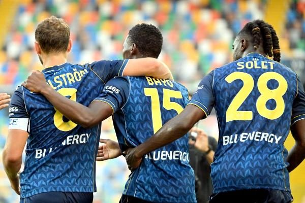

昨晚竞火再次3中2打出比分，弗拉门戈主场2-0完胜米拉索！今晚竞盘火线继续约~
昨晚意大利杯第2轮，乌迪内斯主场2-1力克威尼斯，顺利晋级下一轮。巴约梅开二度，帮助乌迪内斯主场逆转对手。另一场，萨索洛主场被弗洛西诺1-1逼平，最后的点球大战，还是萨索洛主场4-3点球i获胜。

巴甲第4轮补赛，弗拉门戈主场2-0完胜米拉索，宝哥再次命中比分！卡拉斯卡尔上半场传射建功。弗拉门戈主场迎来4连胜！与榜首的帕尔梅拉斯只有1分差距！
今晚我们关注五大联赛双赛，西甲第6轮，皇家社会主场迎战塞尔塔。上轮西甲，皇家社会主场2-1力克西班牙人，取得新赛季首胜，同时也是主场赢球。塞尔塔则是遭遇两连败，3轮比赛仅拿到1分。上赛季两次交锋，皇家社会对塞尔塔1胜1平优势明显。本场比赛，可继续看好！
另外，关注法甲第3轮，图卢兹主场迎战里尔。里尔新赛季1胜1平，包括主场2-2遗憾被大巴黎逼平，两场比赛打进4球，球队的进攻端表现不错。最近4次交锋，里尔均战胜了图卢兹，心理优势明显。这次继续看好？
感谢大家对宝哥的支持，记得在原生浏览器打开，收藏宝哥的主页，每天方便查看宝哥动态。
也麻烦大家分享给好友，转发到朋友圈。